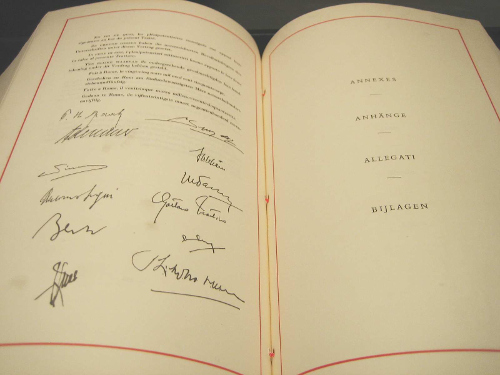
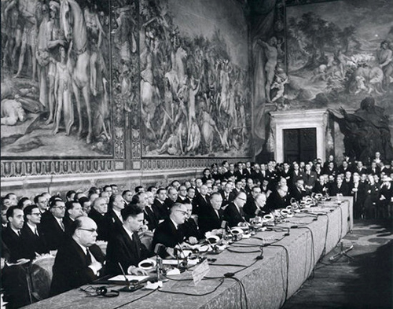

The Treaty of Losers
Part of our failed membership of the European Union involved being in the ‘outer countries’.
Whenever a European Union politician wanted to dismiss the UK’s input from a decision, it would always bring up that it is not one of the “Inner Six” who are the ones who should have the final say. What is common about the Inner Six is that they were either all Axis countries or surrendered at the first major German offensive. They are really the “Inner Losers” of World War II.
| Country | Date of Surrender to Axis |
|---|---|
| Germany | Axis |
| Italy | Axis |
| Luxembourg | 10 May 1940 |
| Netherlands | 14 May 1940 |
| Belgium | 28 May 1940 |
| France | 22 June 1940 |
These are the countries that wrote the Treaty of Rome.
Here are the signatures:
And here they are, the signatories, signing the above treaty. Look how diverse are the signatories and the observers.
Who are these identical clone-like guys that get to represent their countries, are they some kind of war heroes? Sadly not, with a couple of exceptions, they managed to quietly shirk out of World War II despite being of fighting age. The war barely interrupted their wining and dining.
| Signatory | Role in World War II |
|---|---|
| Paul-Henri Spaak | Fled to London |
| Jean-Charles Snoy et d’Oppuers | Labour Volunteer in Belgium |
| Konrad Adenauer | In hiding (in his friends’ mansions) |
| Walter Hallstein | Nazi officer (artillery), got captured by Allies, Prisoner of War |
| Christian Pineau | French Resistance, got captured in 1943, rest of war in prison camp |
| Maurice Faure | Professor, joins resistance in 1944 (after Allies already winning) |
| Antonio Segni | Local government politician in Sardinia |
| Gaetano Martino | University lecturer |
| Joseph Bech | Fled to London |
| Lambert Schaus | Town Councillor, arrested in 1941, built motorways for rest of war |
| Joseph Luns | Got a post at the Dutch embassy in London |
| Johannes Linthorst Homan | Chairman of the Dutch Olympic Committee |
In this signing ceremony, they are meeting on the Capitoline Hill, the very centre of the Roman Empire. This symbolism is not to be ignored. They specifically chose to wrap this new Union in the symbolism of the previous attempts to unite the peoples of Europe ( see Rome Vs the Matrix for a lot more on this topic).
This treaty of signed by War dodgers of the Axis countries that just lost World War II, yet in their head they Roman emperors.
Union of Europeans
The EU traces its origin to this Treaty of Rome, the first line is:
DETERMINED to lay the foundations of an ever-closer union among the peoples of Europe,
On that same first page, we have a resolution “to eliminate the barriers which divide Europe” and to ensure “harmonious development” by “reducing the differences existing between the various regions”. It goes on in much the same way for 80 pages.
The implication of it all is that Europeans are a single people accidentally separated by borders and they should fix it with an ever closer union.
In my post Rome Vs the Matrix, I talked about how from Roman times until today, they have been trying to reunite Continental Europe.
The most immediate pre-brexit example is of course Hitler’s attempt to unify Europe in a Nazi Empire which I talked about in the post Godwin part two.
In short, the all white master race lost to the multi-racial armies of the Allies.
Both the Nazi empire and the EU follow an atheistic secular scientific approach, with religion and Christian culture pushed deep out of public life.
Most importantly they both use Roman era symbolism for their ends. The EU is a Union of White majority countries, with a customs union of external tariffs seeking to partially insulate the European economies from the rest of the world.
If you are from Bulgaria or Finland, you have freedom of movement to work and live into the UK, but if you are from Kenya or India, you do not. The former countries are white European countries, the latter are not. I am not the only one who spotted this.
Mein Kampf is written by a deranged socialist artist who became a dictator. The treaty of Rome is written by lawyers. However, they both have this concept of a United European people, both times they have a white majority, how convenient.
The deep pool of racism that led the Axis populations to condone Hitler didn’t magically disappear when the allied soldiers rolled in.
This concept of a unified European people is the middle-class educated lawyer’s version of a master race. Once you understand this, all the white supremacist euphemisms used knowingly and unknowingly by Europhiles become clear.
For myself, I don’t believe in this concept of a special united European people. I think someone from South Africa or Pakistan is equal to someone from Finland or Slovakia. We should work with everyone and not put up barriers to the 84% of humanity that are not in the EU, we should be equally open to everyone.